Team name: ________ | Members (Name, SRN): ________
GitHub repository: ________
Map matching is framed as candidate ranking. The road network differs for every trip (90 trips in cities across several continents), so a fixed multi-class label space of arc IDs is not possible. Instead, for each GPS observation i we gather nearby candidate arcs Ci and learn P(arc = true arc | features). The candidate with the highest score is the classifier-only prediction. The HMM then picks one candidate per observation so that the whole sequence is likely and traversable on the directed network.
.track/.nodes/.arcs ─► clean track ─► local metric projection ─► KD-tree candidates (≤8 within 60 m) ─► 22 features per (obs, candidate) ─► LightGBM probability ─► HMM/Viterbi ─► arc per obs ─► connected route .route (server-side only) ─► monotone DP alignment ─► per-observation reference arc (training labels / scoring)
Partitions used: train (80 trips) and student_test (10 trips) for all exploration.
The evaluator-testing partition was not available to us and was never used. Code: scripts/01_eda.py,
outputs in results/eda/.
| Train | Student test | |
|---|---|---|
| Trips (folders) | 80 | 10 |
| Files per trip | 4 (.track, .nodes, .arcs, .route) in every trip, none empty | |
| GPS observations (total / mean / min / max) | 208,417 / 2605 / 361 / 19,313 | 19,160 / 1916 / 262 / 3,958 |
| Mean trajectory length | 37.2 km | 29.7 km |
| Mean road nodes / arcs per trip | 24,169 / 48,461 | 9,069 / 18,504 |
| Mean reference-route length (arcs) | 392 | 348 |
| Steps exactly 1 s apart | 93.83% | 98.20% |
| Trips with a gap > 30 s / largest gap | 28 / 153,064 s | 2 / 210 s |
| Consecutive route arcs that are connected | 99.93% | 99.97% |
Column meanings were checked against the data. In .track, column 1 is longitude, column 2 latitude and
column 3 a timestamp in seconds (latitude ranges stay within ±90 only in that order). Node and arc IDs are 0-based row
indices: every arc endpoint and every route arc ID is within range (0 out-of-range
references). Arcs are directed. On average 92.23% of arcs have a reverse twin
(b→a for a→b), so two-way streets appear as two geometrically identical arcs. Distance alone cannot tell
them apart; driving direction must. A GPS row does not correspond to any node or arc row; the only link is geometric.
Each trip has its own network (coordinates span longitudes -100° to 137°),
so nothing can be learned per arc ID.
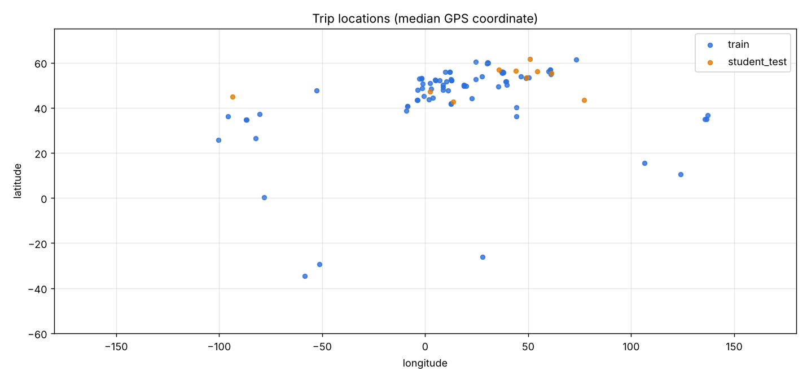
No NaN rows, no out-of-range coordinates, no (0,0) points, no out-of-order and no duplicate timestamps in either
partition (figure below; zero bars are genuinely zero). Missing data shows up instead as time gaps.
28 training trips contain at least one gap over 30 s, and four have extreme gaps
(trip 00000090: 153,064 s; 00000078:
52,810 s). In 16 trips timestamps do
not start at 1. 42 trips were flagged as anomalous (gaps > 30 s, single steps > 200 m, >2%
of points far from the route, or a non-contiguous route; see results/eda/anomalies.csv).
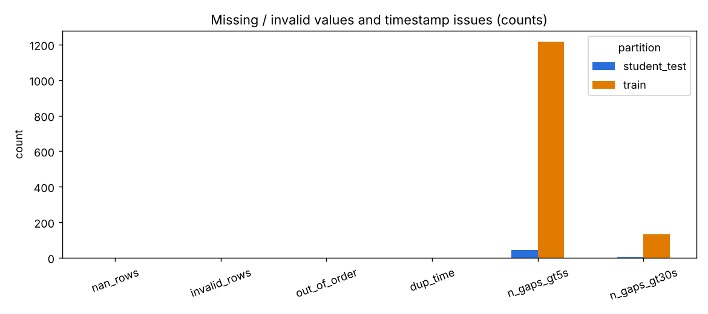
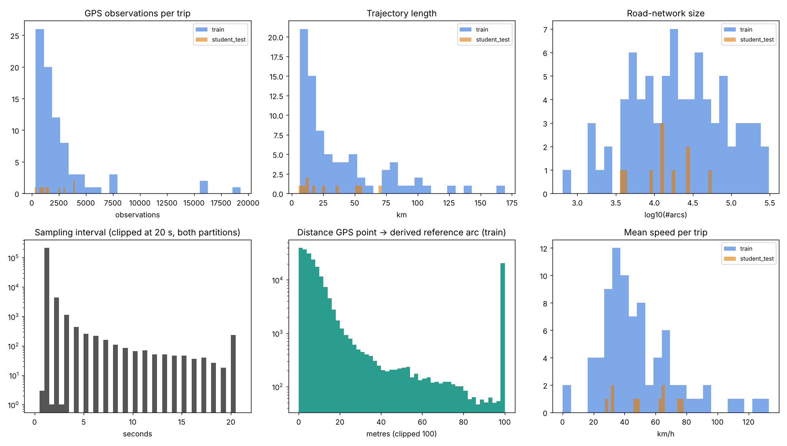
No isolated nodes in any trip. The networks are not single components: the median training trip has 20 weakly connected components, though the largest holds 96.84% of nodes on average. The many small strongly connected components are mostly isolated one-way fragments, plausibly from the network being clipped around each trip. This matters for the HMM, because a transition between candidates in different components is impossible and must be handled (Section 5).
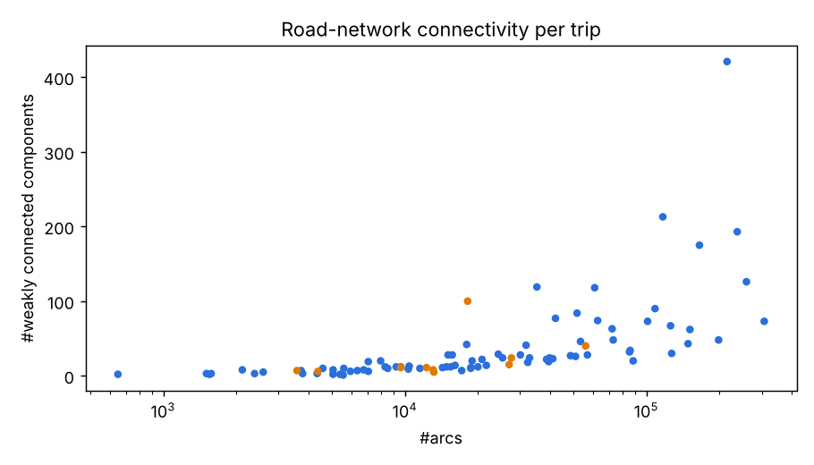
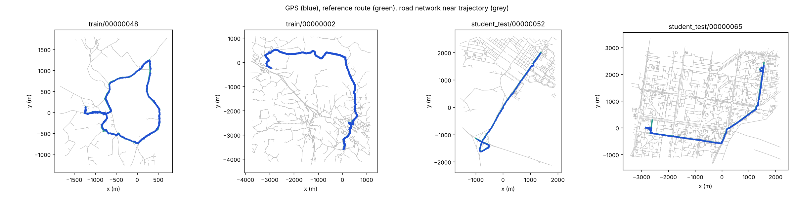
GPS trajectories (blue), reference route (green) and road network near the trip (grey), in local metres. Train 00000002 shows GPS drift and a section the route does not cover.
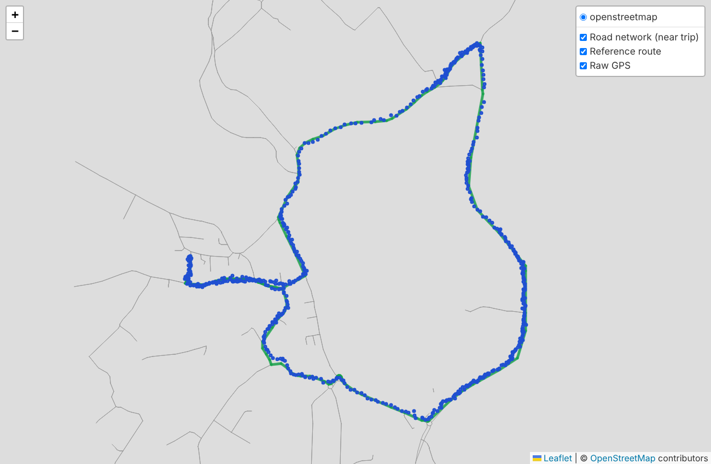
Interactive map maps/eda_train_00000048.html, with layer control for the road network, reference
route and raw GPS. The screenshot was rendered offline without basemap tiles; opened in a browser, the map shows
OpenStreetMap tiles.
io.clean_track): drop non-finite and out-of-range coordinates and (0,0) points,
sort by time, and drop duplicate timestamps. Nothing triggered on this data, but the step protects the API against unseen
evaluator files..route is an ordered arc sequence, not a label per point. We align the
track to the route with a monotone dynamic program: the route position may only move forward, each point pays its
distance to the assigned route arc, and skipping a route arc costs 2 m (so short arcs crossed between two 1 Hz fixes
can be skipped). The median point-to-label distance is 4.6 m (train).head_diff / head_cos compare the arc bearing with the motion heading
(displacement over ±2 points), and head_valid is set when the vehicle moved >3 m. Stationary points get a
neutral value.d_prev, d_next, and win_dist (mean
over ±5 observations).dist_rank, dist_minus_min, dist_ratio, win_rank,
win_minus_min, n_cand.proj_t and end_dist.arc_len, out_deg, in_deg, has_twin. Sampling
context: speed, dt_prev, step_prev.The final model's gain-based feature importance (Section 4) confirms the choices: windowed distance, direction agreement and relative distance dominate.
Protocol. Binary target: candidate = reference arc. GroupKFold(5) by trip on the 80 training trips, so no
trip appears in both a training and a validation fold. Each model was then refit on all 80 training trips and evaluated on the 10
student-testing trips (reliable observations only, 19,133 observations). Seed 42 throughout.
Code: scripts/03_train_compare.py; per-fold results in results/models/cv_folds.csv.
Metric definitions. Top-1 accuracy: share of observations whose highest-scoring candidate is the reference arc (missed candidates count as wrong). Macro F1 / precision / recall: candidate-level binary metrics with the same decision rule (top candidate = positive, the rest = negative), so they are threshold-free and consistent with Top-1. Log loss: binary cross-entropy of candidate probabilities. Route continuity (in this table): share of consecutive observation pairs whose classifier-only arcs are the same arc or directly connected. The primary selection metric is CV macro F1, with CV log loss as a tie-breaker, because the HMM consumes the probabilities directly.
| Model | Algorithm family | Key configuration | CV macro F1 (±sd) | Top-1 acc. (student-test) | Route continuity (adjacent, student-test) | Student-test macro F1 | Log loss (student-test) | Inference time (ms / obs) |
|---|---|---|---|---|---|---|---|---|
| LogisticRegression | Linear / probabilistic | StandardScaler + L2, C=1.0, lbfgs, max_iter=1000 | 0.9232 ± 0.0081 | 0.8657 | 0.9422 | 0.9208 | 0.1237 | 0.0007 |
| GaussianNB | Probabilistic (generative) | QuantileTransformer(normal) + GaussianNB, var_smoothing=1e-9 | 0.8716 ± 0.0294 | 0.7907 | 0.8811 | 0.8761 | 1.1290 | 0.0154 |
| KNN | Instance-based | StandardScaler + k=31, distance-weighted, euclidean | 0.9234 ± 0.0075 | 0.8683 | 0.9427 | 0.9224 | 0.1331 | 4.1406 |
| RandomForest | Ensemble (bagging) | 200 trees, min_samples_leaf=5, max_features=sqrt | 0.9313 ± 0.0092 | 0.8851 | 0.9517 | 0.9324 | 0.0908 | 0.0591 |
| HistGradientBoosting | Boosting | lr=0.1, max_iter=300, max_leaf_nodes=31, early stop on 10% val | 0.9299 ± 0.0105 | 0.8845 | 0.9457 | 0.9320 | 0.0922 | 0.0113 |
| LightGBM | Boosting (leaf-wise GBDT) | lr=0.05, 400 rounds, num_leaves=31, subsample=0.8, colsample=0.8 | 0.9320 ± 0.0103 | 0.8918 | 0.9525 | 0.9363 | 0.0875 | 0.0577 |
| MLP | Neural network | StandardScaler + MLP(64,32), relu, adam lr=1e-3, batch 512, early stopping | 0.9299 ± 0.0103 | 0.8777 | 0.9537 | 0.9280 | 0.0937 | 0.0040 |
All seven models output probabilities, so log loss applies to all of them. Precision equals Top-1 accuracy here because exactly one candidate per observation is predicted positive.
A1. Why suitable? Several features relate roughly monotonically to the log-odds of a correct match (smaller windowed distance, larger heading cosine, lower distance rank). A linear model is therefore a strong, interpretable baseline that also yields reasonably calibrated probabilities for the HMM.
A2. Strengths / limitations. Strengths: fastest inference of all models (0.0007 ms/obs), stable across folds (sd 0.0081), calibrated. Limitation: it cannot model interactions. Heading agreement only matters when the vehicle is moving (head_valid), and distance matters differently on short vs long arcs, so the decision surface is too simple.
B5. Hyperparameters (initial values). C = 1.0 (L2), solver lbfgs, max_iter = 1000, StandardScaler on all 22 features.
B6. Loss / objective. Binary cross-entropy (logistic loss) + L2 penalty, minimised with L-BFGS.
C7–C8. Student-test performance. Top-1 accuracy 0.8657, macro F1 0.9208, log loss 0.1237, precision 0.8657, recall 0.8681, adjacent route continuity 0.9422. CV folds macro F1: 0.9206, 0.9174, 0.9318, 0.9316, 0.9144.
C9. Over/underfitting. Train macro F1 0.9235 vs CV 0.9232 (gap 0.0003) and test 0.9208: the gap is essentially zero, but all scores trail the tree ensembles by about 0.01 macro F1 / 0.016 Top-1. This is underfitting (high bias), not overfitting.
A1. Why suitable? A generative probabilistic baseline: it models each feature's class-conditional distribution and needs almost no tuning. A QuantileTransformer maps the skewed distance features to approximately Gaussian marginals first.
A2. Strengths / limitations. Strengths: trivial to train, gives probabilities. Limitation: the naive independence assumption is badly violated. dist, win_dist, d_prev and d_next are near-duplicates, so their evidence is counted several times and the probabilities become extremely over-confident.
B5. Hyperparameters (initial values). QuantileTransformer(output_distribution='normal', subsample=200k), var_smoothing = 1e-9.
B6. Loss / objective. No iterative loss: closed-form maximum-likelihood estimates of per-class Gaussian means and variances.
C7–C8. Student-test performance. Top-1 accuracy 0.7907, macro F1 0.8761, log loss 1.1290, precision 0.7907, recall 0.7929, adjacent route continuity 0.8811. CV folds macro F1: 0.8681, 0.8260, 0.9008, 0.8939, 0.8693.
C9. Over/underfitting. Train 0.8706 ≈ CV 0.8716 ≈ test 0.8761 macro F1, so there is no overfitting. Performance is the lowest, and CV log loss is 1.184, about 12× LightGBM's, with the largest fold variance (sd 0.0294). This is underfitting with poor calibration, which makes the model unsuitable as an HMM emission.
A1. Why suitable? Candidates with similar geometric/heading context should share outcomes, so a similarity-based method is a natural non-parametric choice with no assumption about the decision boundary.
A2. Strengths / limitations. Strengths: non-linear, no training phase (0.13 s fit). Limitations: it depends on feature scaling, and inference is by far the slowest (4.14 ms per observation, about 72× LightGBM), which is a real cost when every API call scores thousands of candidates.
B5. Hyperparameters (initial values). k = 31 neighbours, distance weighting, Euclidean metric, StandardScaler.
B6. Loss / objective. None: a lazy learner that stores the training set and predicts by weighted neighbour vote.
C7–C8. Student-test performance. Top-1 accuracy 0.8683, macro F1 0.9224, log loss 0.1331, precision 0.8683, recall 0.8708, adjacent route continuity 0.9427. CV folds macro F1: 0.9206, 0.9203, 0.9339, 0.9278, 0.9146.
C9. Over/underfitting. In-sample macro F1 0.9974 vs CV 0.9234. With distance weighting every training point is its own nearest neighbour, so the in-sample score is meaningless and the 0.074 gap reflects memorisation (overfitting in the variance sense). Its CV/test scores match Logistic Regression's, so the extra flexibility brought no gain.
A1. Why suitable? Bagged decision trees capture interactions (heading × moving, distance × arc length) and are robust to the unscaled, heavy-tailed distance features.
A2. Strengths / limitations. Strengths: second-best CV macro F1 (0.9313) and good log loss. Limitations: slowest training (110 s for one fit vs 7 s for LightGBM) and a large model file; the probability is a vote share, which is coarser than boosting.
B5. Hyperparameters (initial values). n_estimators = 200, min_samples_leaf = 5, max_features = sqrt, bootstrap, unlimited depth.
B6. Loss / objective. Each tree greedily minimises Gini impurity at each split; predictions average the trees' class proportions.
C7–C8. Student-test performance. Top-1 accuracy 0.8851, macro F1 0.9324, log loss 0.0908, precision 0.8851, recall 0.8876, adjacent route continuity 0.9517. CV folds macro F1: 0.9274, 0.9273, 0.9450, 0.9355, 0.9213.
C9. Over/underfitting. Train 0.9674 vs CV 0.9313 (gap 0.0361): moderate overfitting from deep, fully grown trees. Bagging limits the damage, and student-test (0.9324) matches CV, so generalisation is still good.
A1. Why suitable? Gradient boosting fits many shallow trees sequentially, each correcting the previous ones' errors. Histogram binning makes it fast on about 0.36M rows.
A2. Strengths / limitations. Strengths: fast (2.6 s fit), accurate, calibrated log-loss output. Limitation: its early stopping uses a random 10% split of rows, not trips, so neighbouring points of the same trip end up on both sides and stopping is slightly optimistic.
B5. Hyperparameters (initial values). learning_rate = 0.1, max_iter = 300, max_leaf_nodes = 31, early_stopping on a 10% validation split (stopped after 106 iterations in the curve run).
B6. Loss / objective. Binary log loss (cross-entropy), minimised by gradient boosting.
C7–C8. Student-test performance. Top-1 accuracy 0.8845, macro F1 0.9320, log loss 0.0922, precision 0.8845, recall 0.8870, adjacent route continuity 0.9457. CV folds macro F1: 0.9241, 0.9261, 0.9450, 0.9359, 0.9187.
C9. Over/underfitting. Train 0.9405 vs CV 0.9299 (gap 0.0105) is small. The training curve shows training and validation loss falling together until early stopping triggered, so there is no significant overfitting.
A1. Why suitable? Leaf-wise GBDT with row/column subsampling. It models the feature interactions that the linear model misses, while staying fast enough to score every candidate of an API request in milliseconds and producing well-calibrated probabilities, which the HMM uses as emissions.
A2. Strengths / limitations. Strengths: best CV macro F1 (0.9320), best CV log loss (0.0969), best student-test Top-1 (0.8918), 7.0 s fit. Limitations: leaf-wise growth can overfit with many leaves, so regularisation matters (hence the Bayesian search). Like every pointwise model it ignores sequence consistency.
B5. Hyperparameters (initial values). n_estimators = 400, learning_rate = 0.05, num_leaves = 31, subsample = 0.8 (bagging_freq 1), colsample_bytree = 0.8, min_child_samples = 20 (default), no L1/L2.
B6. Loss / objective. Binary log loss (cross-entropy) with second-order gradient boosting.
C7–C8. Student-test performance. Top-1 accuracy 0.8918, macro F1 0.9363, log loss 0.0875, precision 0.8918, recall 0.8943, adjacent route continuity 0.9525. CV folds macro F1: 0.9286, 0.9265, 0.9476, 0.9364, 0.9210.
C9. Over/underfitting. Train 0.9519 vs CV 0.9320 (gap 0.0199). In the curve run the validation log loss flattens around round 150 and reaches 0.1113 at its minimum (round 340), while training loss keeps falling to 0.0637. That is mild overfitting beyond about 150 rounds, but validation loss never rises, so the extra rounds are harmless.
A1. Why suitable? A neural network learns non-linear combinations of the scaled features without hand-crafted interactions, and its sigmoid output is a probability.
A2. Strengths / limitations. Strengths: competitive (CV 0.9299), very fast inference (0.0040 ms/obs). Limitations: sensitive to scaling and learning rate, noisier training, needs early stopping.
B5. Hyperparameters (initial values). Hidden layers (64, 32), ReLU, Adam lr = 1e-3, batch 512, L2 alpha = 1e-4, max 60 epochs, early stopping (patience 6).
B6. Loss / objective. Binary cross-entropy + L2 weight penalty, minimised with Adam.
C7–C8. Student-test performance. Top-1 accuracy 0.8777, macro F1 0.9280, log loss 0.0937, precision 0.8777, recall 0.8802, adjacent route continuity 0.9537. CV folds macro F1: 0.9268, 0.9269, 0.9453, 0.9335, 0.9172.
C9. Over/underfitting. In the epoch-wise run the validation loss is lowest at epoch 7 (0.1160) and then drifts upward (0.1204 at epoch 40), while training loss keeps falling. This is clear overfitting after a few epochs, which early stopping contains. Train/CV gap with early stopping: 0.0085.
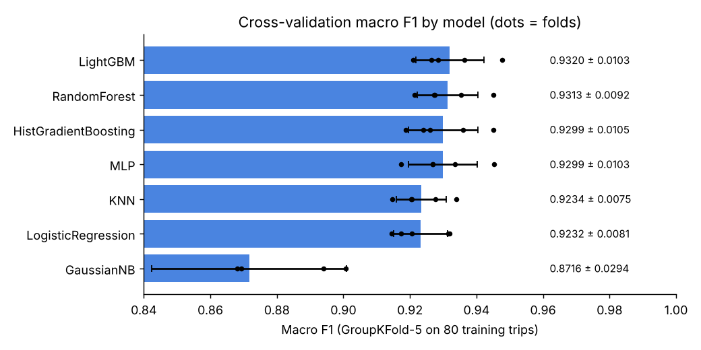
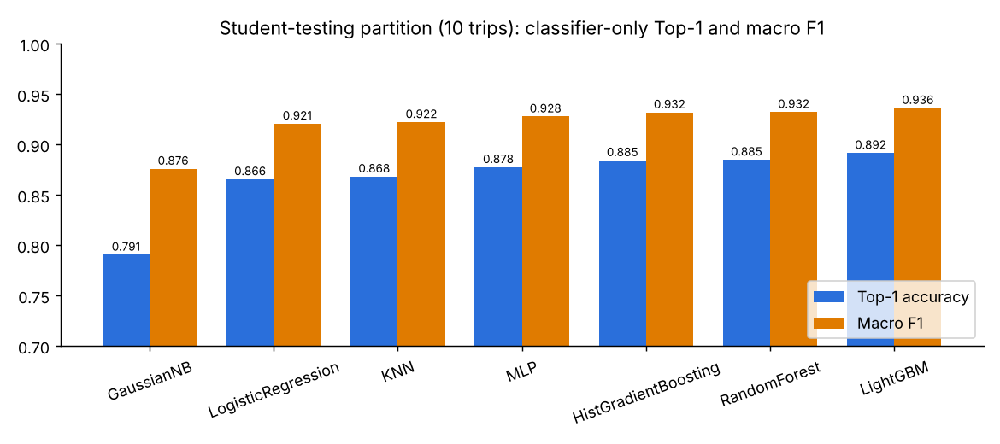
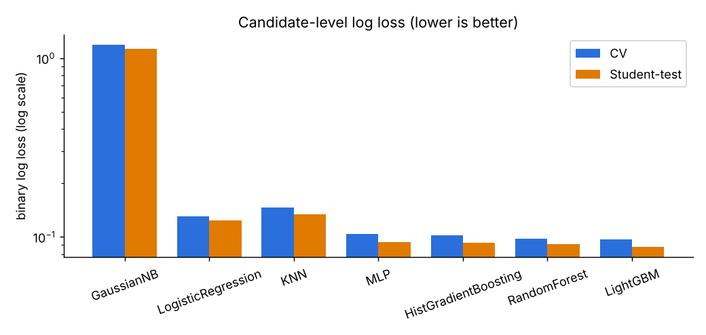
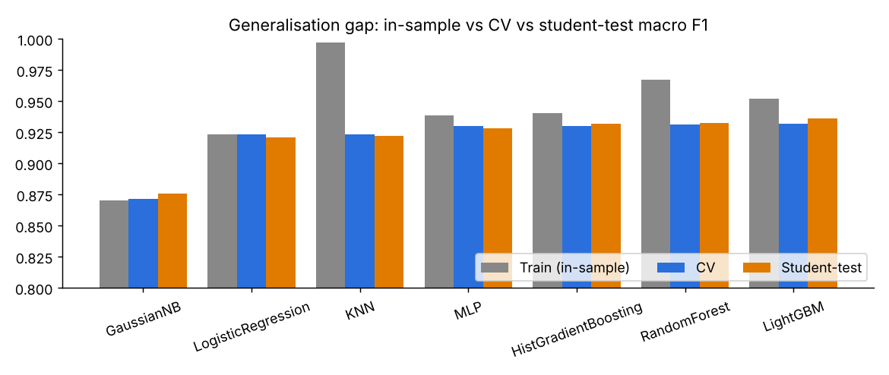
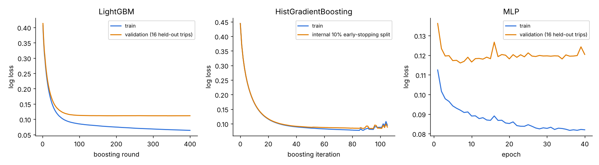
Training curves only for models with real iteration histories (LightGBM boosting rounds, HistGradientBoosting iterations, MLP epochs). LightGBM/MLP validation = 16 held-out training trips; HGB uses its internal split. No curves are shown for LR, NB, KNN or RF, which have no epoch-wise history.
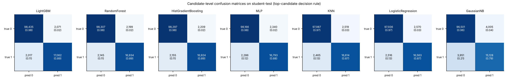
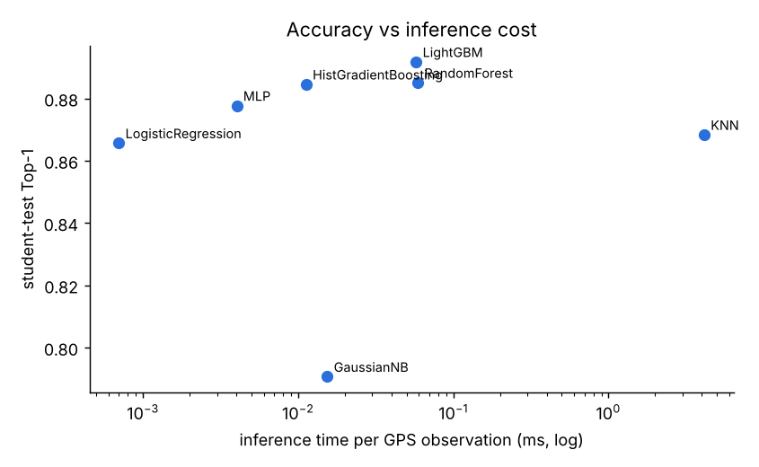
LightGBM was selected. It has the highest CV macro F1 (0.9320) and lowest CV log loss (0.0969), and it also leads on the student-test set (Top-1 0.8918, macro F1 0.9363), so the CV ranking held. Random Forest is a close second on CV (0.9313) but takes about 16× longer to train. The CV difference between the top models (about 0.001–0.002) is smaller than the fold standard deviation (about 0.01), so efficiency, calibration (log loss feeds the HMM) and room for tuning decided the choice. KNN was rejected for inference cost, and GaussianNB for calibration.
Method. Optuna's Tree-structured Parzen Estimator (TPE) sampler, seed 42: 10 random start-up trials, then
TPE models p(params | good) / p(params | bad) to propose new points. A median pruner stops a trial early if its
running fold-mean falls below the median of earlier trials at the same fold. The full search record is in
results/bayes_opt/trials.csv and the SQLite study optuna_study.db.
Q1–Q2. Search space:
| Hyperparameter | Range / distribution | Best value |
|---|---|---|
| n_estimators | int uniform [100, 1000], step 50 | 450 |
| learning_rate | log-uniform [0.01, 0.2] | 0.0484 |
| num_leaves | int log-uniform [15, 255] | 74 |
| min_child_samples | int log-uniform [5, 300] | 11 |
| subsample | uniform [0.5, 1.0] | 0.906 |
| colsample_bytree | uniform [0.4, 1.0] | 0.971 |
| reg_lambda (L2) | log-uniform [1e-3, 10] | 0.0108 |
| reg_alpha (L1) | log-uniform [1e-3, 10] | 0.0018 |
Q3. Objective: maximise mean macro F1 over GroupKFold(5) by trip on the 80 training trips (the same stride-3, reliable-label data and splits as the model comparison). The student-test and evaluator partitions were not used in the search.
Q4. Trials: 40 (28 completed, 12 pruned), 30.7 minutes on 2 CPU cores.
Q5. Best values: see table above; best CV macro F1 = 0.9328.
Q6. Did tuning help? Same data partitions and metrics for both:
| Model | CV macro F1 | CV log loss | Student-test Top-1 | Student-test macro F1 | Student-test log loss | Fit time (s) | Inference (ms/obs) |
|---|---|---|---|---|---|---|---|
| LightGBM (untuned) | 0.9320 ± 0.0092 | 0.0969 | 0.8918 | 0.9363 | 0.0875 | 8.2 | 0.0574 |
| LightGBM (tuned) | 0.9328 ± 0.0088 | 0.0973 | 0.8942 | 0.9378 | 0.0858 | 9.4 | 0.0797 |
| LightGBM (tuned, refit on all train obs) [deployed] | N/A (no CV: refit only) | N/A | 0.8925 | 0.9368 | 0.0857 | 33.2 | 0.0828 |
Yes, modestly. CV macro F1 changes from 0.9320 to 0.9328 (+0.0008) and CV log loss from 0.0969 to 0.0973 (marginally worse: the objective optimised F1, not calibration). On student-test, Top-1 moves 0.8918 → 0.8942 and macro F1 0.9363 → 0.9378. The gains are smaller than the fold standard deviation: the default configuration was already close to the optimum and the remaining error is dominated by genuinely ambiguous points (parallel roads, twins at stops), which no hyperparameter fixes. Those are what the HMM targets. The deployed model (last row) uses the tuned configuration refit on all 185,162 reliable training observations instead of every 3rd one.
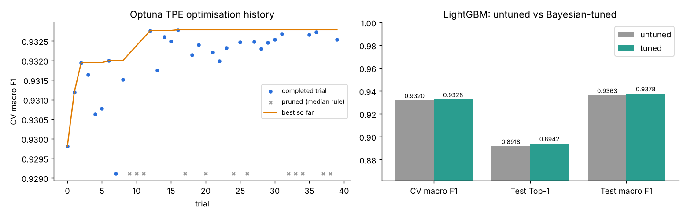
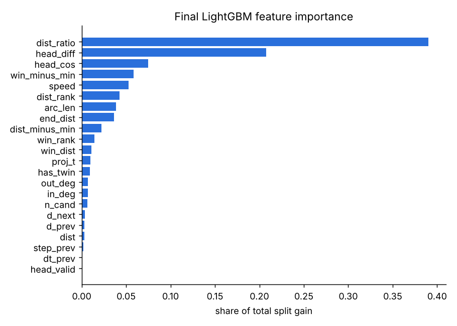
Code: pathsnap/hmm.py (decoder), scripts/05_hmm_eval.py (experiments).
Q1. Hidden states. At observation i the hidden state is one candidate arc c ∈ Ci (the same candidate set and order the classifier scored, so the candidate↔arc correspondence is preserved), together with the projection offset si(c) of the GPS point along that arc in metres.
Q2. Emissions. log P(zi | c) = we · log pLightGBM(c), clipped at 10-6. As a baseline we also ran the classical Gaussian emission −½(d/σ)², with d the perpendicular distance.
Q3. Transitions (Newson & Krumm style). log P(c' → c) = −|droute − dgc| / β, where dgc is the straight-line distance between the two GPS points and droute is the driving distance on the directed graph: (remaining length of c' after s') + shortest path from end(c') to start(c) + s. On the same arc, droute = s − s', and backward moves beyond 15 m are forbidden (wrong-way driving). Shortest paths use a bounded Dijkstra (cutoff 3·dgc + 200 m, max 5 km) over the cropped network, cached per source node. Viterbi recurrence: δi(c) = log Ei(c) + maxc'[δi-1(c') + log T(c',c)], with back-pointers for the arg-max path.
Q4. Missing candidates and gaps. Candidate generation falls back to the 3 nearest arcs within 300 m, so on this data no observation lacked candidates. If one did, it is skipped by the recursion and inherits the previous prediction. A time gap > 60 s cuts the chain: the segment so far is backtracked, and Viterbi restarts from emissions alone, because the vehicle may have travelled an unknown route during the gap.
Q5. Disconnected segments. If no candidate at i is reachable from any candidate at i−1 within the cutoff (all transitions −∞, e.g. different network components or a GPS jump), the chain is also cut and restarted rather than forcing an impossible path. The final route is made connected by filling the shortest path between consecutive distinct predicted arcs. Student-test needed 7 chain breaks in total.
Decoder tuning. β ∈ {3, 5, 10, 20, 40} m × we ∈ {0.5, 1, 2} (and β × σ for the Gaussian baseline) were grid-searched on out-of-fold LightGBM probabilities for all 80 training trips. Each fold's model never saw the trips it scored, so the decoder was tuned on realistic, not in-sample, probabilities. Selected: emission = clf, β = 5 m, we = 1. Training OOF Top-1: classifier-only 0.8837 → HMM 0.9159 (Gaussian-emission HMM: 0.9079). Multiplying the whole Viterbi objective by β shows that only the product we·β affects the arg-max, which is why cells with equal products (e.g. β=5, w=1 and β=10, w=0.5) give identical scores. The grid is effectively a 1-D search over we·β ∈ [1.5, 80]; the optimum is at 5, and accuracy falls as we·β grows (emissions over-weighted).
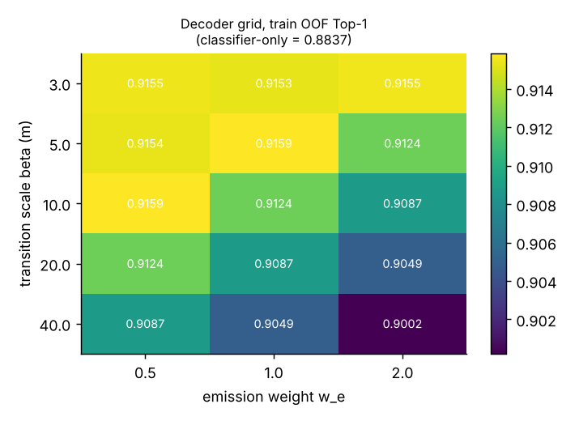
Q6. Did HMM decoding help? Student-testing partition (10 trips):
| Method | Top-1 (micro) | Top-1 (trip mean) | Continuity (adjacent) | Continuity (traversable) | Route precision | Route recall | Route F1 | Exact route match (/10) | Chain breaks | Decode ms/obs |
|---|---|---|---|---|---|---|---|---|---|---|
| Classifier only | 0.8925 | 0.9022 | 0.9548 | 0.9894 | 0.9174 | 0.9789 | 0.9465 | 0 | 0 | 0.002 |
| HMM + classifier emission | 0.9285 | 0.9303 | 0.9780 | 0.9996 | 0.9611 | 0.9965 | 0.9783 | 0 | 7 | 0.124 |
| HMM + Gaussian emission (baseline) | 0.9033 | 0.9086 | 0.9745 | 0.9996 | 0.9531 | 0.9954 | 0.9735 | 0 | 7 | 0.090 |
Yes. Top-1 rises by 3.60 points (89.25% → 92.85%) and traversable continuity from 98.94% to 99.96%. The classifier alone produces physically impossible jumps (to a reverse twin or a parallel road for one or two seconds) that the HMM removes. Route precision improves from 0.9174 to 0.9611: the classifier-only "route" contains many spurious arcs. Using the classifier probabilities as emissions beats the classical Gaussian-distance emission (90.33%), which shows the learned features add information the HMM alone does not have.
| method | trip | Classifier only | HMM + Gaussian emission (baseline) | HMM + classifier emission | Δ HMM |
|---|---|---|---|---|---|
| 00000000 | 0.9525 | 0.9636 | 0.9632 | +0.0108 | |
| 00000007 | 0.9549 | 0.9409 | 0.9734 | +0.0185 | |
| 00000009 | 0.8561 | 0.8437 | 0.8856 | +0.0296 | |
| 00000040 | 0.9556 | 0.9756 | 0.9753 | +0.0197 | |
| 00000052 | 0.9618 | 0.9924 | 0.9809 | +0.0191 | |
| 00000056 | 0.9026 | 0.9361 | 0.9489 | +0.0463 | |
| 00000065 | 0.8568 | 0.8490 | 0.8659 | +0.0091 | |
| 00000076 | 0.9145 | 0.8984 | 0.9482 | +0.0336 | |
| 00000077 | 0.7791 | 0.7868 | 0.8512 | +0.0721 | |
| 00000091 | 0.8879 | 0.8993 | 0.9108 | +0.0229 |
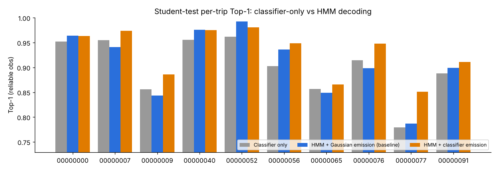
Where HMM did not help. Point-level Top-1 improved on all 10 student-test trips (smallest gain: trip 00000065, +0.0091). The Gaussian-emission HMM, which ignores the classifier, was worse than classifier-only on 4 trips (00000007, 00000009, 00000065, 00000076): distance alone cannot separate twins and parallel roads, so sequence constraints only help when the emissions are informative. After the gap fix below, HMM route F1 is at least as good as classifier-only on every trip.
Gap handling: a failure found and fixed. In the first decoder version the route builder inserted the shortest path
between every pair of consecutive predicted arcs. On trip 00000065 this lowered route F1 below classifier-only
(0.9404 → 0.8814). The trip has a
210 s GPS gap during which the vehicle moved only 5 m (parked). The chain correctly broke there, but the builder then
"repaired" the break with about 1.7 km of arcs that were never driven. We now insert a connecting path only if its length is
plausible for the GPS displacement (≤ 3·dgc + 200 m, the transition model's own bound), and otherwise leave the
route discontinuous. Trip 00000065 route F1: 0.8814 →
0.9723; all-trip mean route F1:
0.9685 → 0.9783. Point-level Top-1 is unaffected (the fix only
changes route assembly). The first-version outputs are kept as results/hmm/*_v1_unconstrained_fill.csv.
The remaining errors are mostly (a) the 0.28% of observations whose reference arc is not a candidate, (b) points near intersections where the DP-aligned label is itself uncertain to within one arc, and (c) parallel roads closer than the GPS noise. Trip 00000077 (lowest Top-1) is the clearest case of (c): the HMM lifts it from 0.7791 to 0.8512, but it stays the weakest trip.
Every student-test trip has an interactive map (maps/student_test_<id>.html, generated by
scripts/05_hmm_eval.py). Layers, each switchable in the layer control: raw GPS (blue dots, with time tooltips),
road network near the trip (grey), reference route (thick translucent green), HMM-predicted route (red), classifier-only arcs
(orange, off by default). Start/end markers and a legend are included, and the extent is fitted to the trajectory.
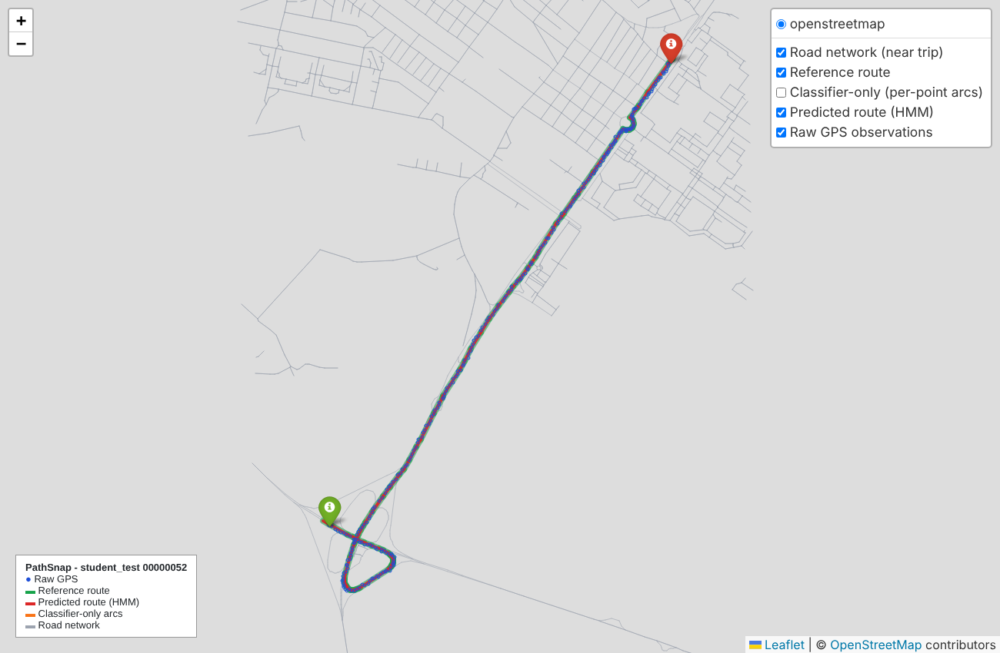
Student-test trip 00000052. The red predicted route lies on the green reference route along the whole trip.
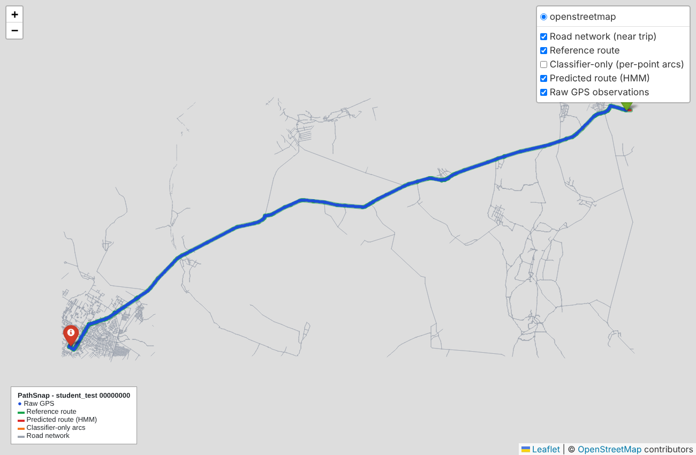
Student-test trip 00000000.
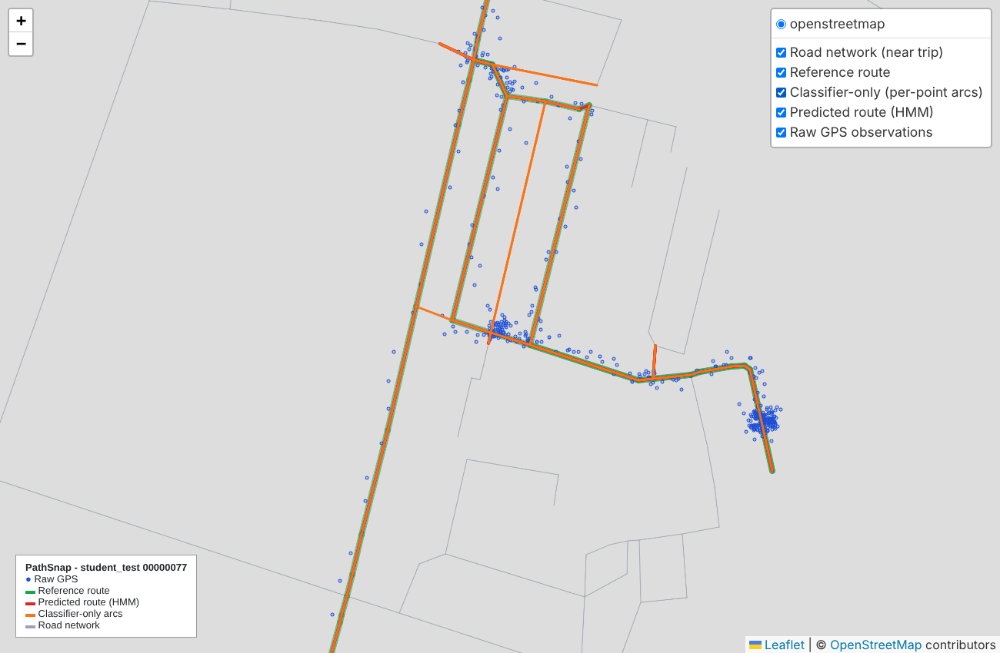
Student-test trip 00000077 (hardest trip), zoomed to a dense block where GPS scatter is large, with the classifier-only layer switched on (orange, drawn on top). The classifier alone jumps to a diagonal street, side stubs and cross-streets that the vehicle never used. The HMM route (red, under the orange where they agree) follows the green reference because those jumps are not traversable at the observed speed.
Laptop 1 runs uvicorn api.main:app --host 0.0.0.0 --port 8000 with
PATHSNAP_EVAL_DIR pointing at the ten evaluator trips. It loads models/final/classifier.joblib and
hmm_config.json once at start-up. Endpoints: GET /health, GET /trips (IDs + point counts),
POST /predict {"trip_id": …}. /predict loads the trip without its route, runs cleaning →
candidates → features → LightGBM → Viterbi → route reconstruction, and only afterwards reads the .route file
server-side to compute Top-1 accuracy, classifier-only Top-1, route precision/recall/F1 and continuity. The response contains
GPS points, predicted route polylines and arc IDs, metrics and timings, never the reference route. Every request is logged
to the console (method, client IP, trip, accuracy, timing).
Laptop 2 serves ui/ with python -m http.server 5500. The page (Leaflet, bundled
locally) asks for the API address, lists the ten trips returned by /trips, sends the selected ID to
/predict, and draws GPS points and the predicted route with a legend and layer control, next to the metrics.
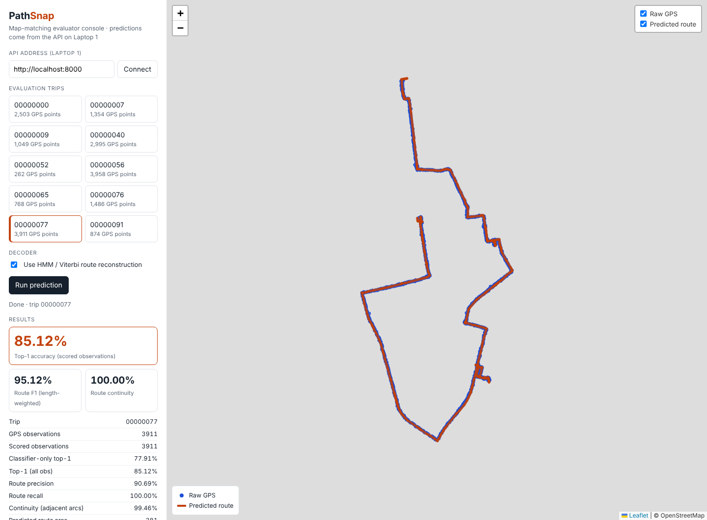
UI after predicting a trip. Prepared in development against the student-test partition; basemap tiles were unavailable in the build environment, while the demo laptops load OpenStreetMap tiles.
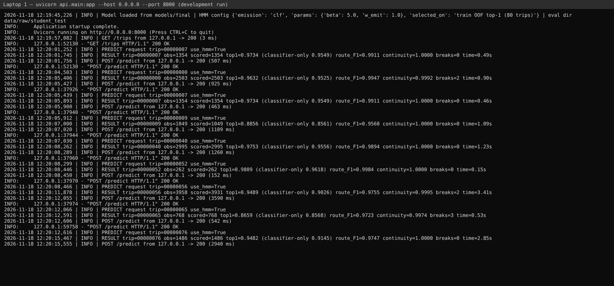
API console log of the requests above (development run). To be replaced with the screenshot from the CMD of Laptop 1 during the evaluation run, as required.
results/ by scripts/06_figures.py
and scripts/07_report.py. Rerunning scripts 01–05 regenerates them (seed 42). Console logs are in logs/.